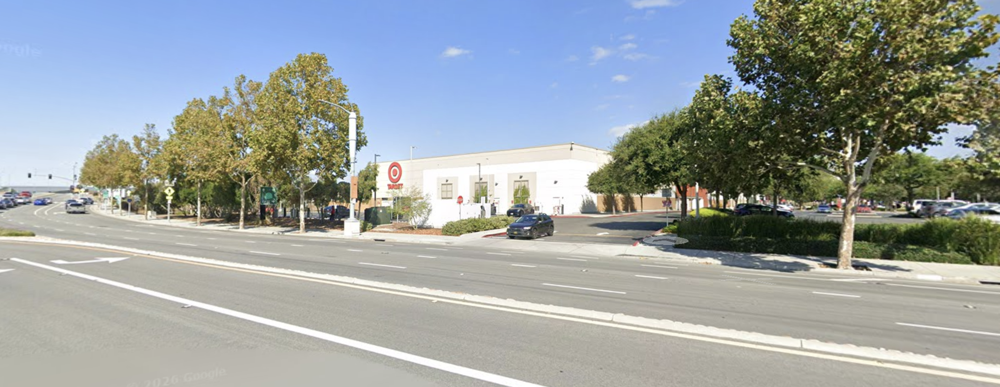
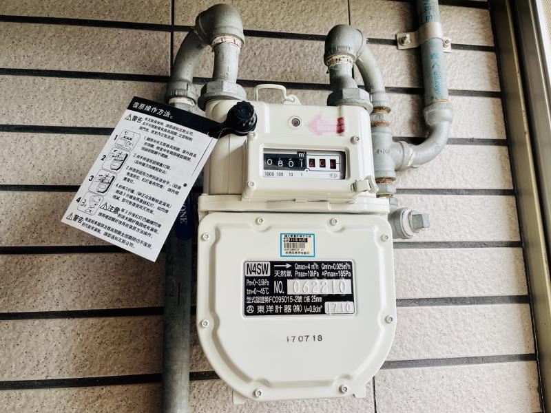
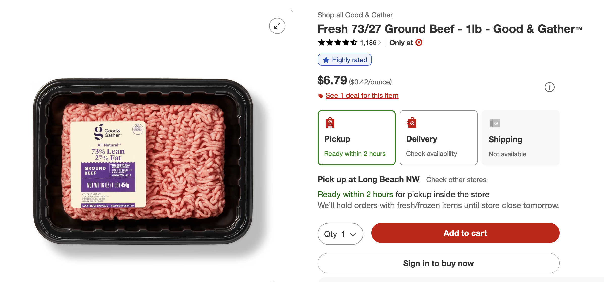
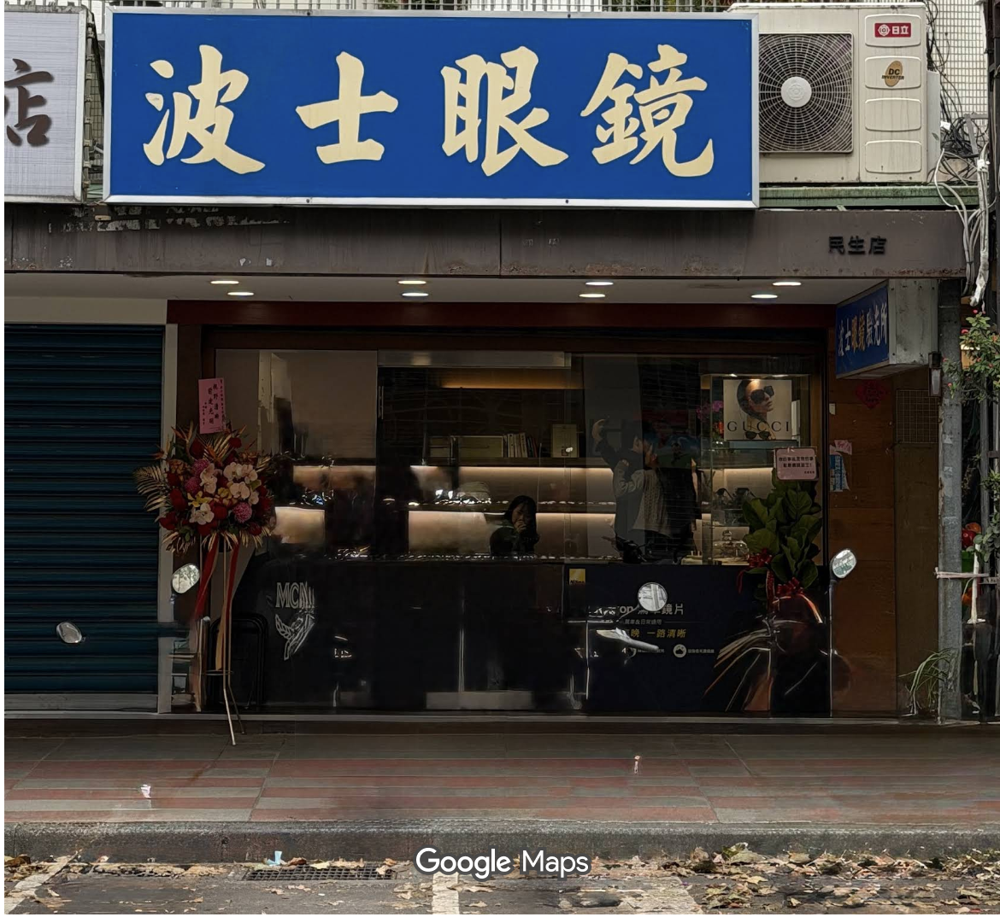

Observations
Internship

After graduating from college, I completed two consecutive internships that lasted a total of 6 months. The first one was with Astera Labs, a fabless chip design company in San Jose. The second one was with Amazon in Seattle. Career-wise, it was a rare combination: an EE student usually brags about designing or verifying silicon, and a CS student brags about implementing web services, but few end up doing both.
In the internship, I lived within walking distance of Target or Safeway, and most weeks looked the same: open the app, check the price per pound against Amazon, note the aisle number, walk in, find the item, put it in a basket, scan it myself, leave. Never once did I need help from a store employee.
Around the end of the internships, I returned to Taiwan to complete the mandatory military service (very reluctantly 😢, worth another story).
Taiwan

Taiwan is where I was born and completed my elementary school. I lived there for 12 years. When I went back for the service, I stayed at my grandma's apartment. Every month, she had to check the gas meter in her apartment for the usage number, then walk down three flights of stairs and write that number down on a form stamped on the apartment's main door at the lobby.
Japan
A few months later, I went for a 5-day trip in Japan and stayed at a very different place. Our hotel sits in Tokyo's Ginza area. It features a sentō (public bath), where you strip away every belonging you own, like your phone, watch, wallet, etc., and clean yourself in the shower section. After the body is washed, you move into the hot bath. From neck to your toes, your body is soaked inside a 40 degree celsius water, where heat slowly creeps into your body, and your mind wanders around, partly to resist the urge to jump out.
I stayed anyway. A few minutes later I moved to the cold bath, then back to the hot one. Then I talked with my cousin about things we ate or saw on the trip, and watched other bathers switching from hot to cold.
No one was checking a watch, because no one had one.Everything was in the locker, so nothing could tell us what to do next.
We visited different places in Tokyo — Ginza, Odaiba, Asakusa, Ueno, Shinjuku. While in Shinjuku, we went into the Isetan shopping mall. As I walked past the Ralph Polo section and lingered next to a shirt, a staff member stepped forward and asked if I'd like to try it on. I said yes, and he brought me to the fitting room. After a few minutes, he knocked to make sure I was ready. I stepped out and showed him how it fit. He made a comment, and when I pushed back that it ran a little long, he took the feedback and brought out a few sweaters instead. After I tried those on too, he said the navy one suited me especially well. I thought so too — but the shirts were expensive, and I politely let him know that I wasn't going to buy anything today. He accepted it without any change in his manner, handed me his business card, and said he hoped we'd visit the store again.
Analysis

The internal and external abstractions
In software, abstraction hides a system's "how" so you only have to think about the "what" — just like you don't need to know Google's ranking algorithm, only how to type in a question to the text box and hit enter to get the search result. The Japan trip made me realize I'd quietly built my life around two versions of abstractions, one external and one internal.
Externally, Target abstracted away my shopping experience. The app shows me a product's look, price, aisle number, and nutrition. I don't need to ask any staff anything. I could have asked a staff member which cut of beef suited a recipe, but it never occurred to me; the Target app was designed such that users interact with Target through the app, not through people. I was so used to that level of abstraction that the gas meter in Taiwan was hostile by comparison; not only did I have to know that the gas company calculated bills from that number, the meter handed me a raw number like "0064" instead of a calculated fee in dollars.
Internally, I abstracted away daily routine itself. Everyday necessities
such as showering became result-driven tasks, no different from calling a
method in programming — self.shower() — where I only cared
about latency (how long it takes) and resource cost (how much shampoo),
never the process itself. It's a hyper-efficient way to live when you're
optimizing for internship deadlines. It's a strange way to live otherwise.
What I lost
Negotiations
Abstraction sounds like a pure win for modern humans — Target built a retail empire on it, while the Taiwanese utility system ignored it, turning something that should be invisible into a monthly chore. But Japan showed me what good abstraction can quietly cost: I lost the negotiation between buyer and seller.
At the Isetan Mall, I've never felt more satisfied shopping without buying anything. The Isetan staff member broke the abstraction entirely — he handed me a business card with his name on it, gave me his honest read on how a shirt fit, and let me push back when I disagreed. He'd fitted thousands of people, and I got access to that judgment just by having an honest conversation.
Sure, he had an incentive to upsell me — but I always had the right to say no, and the friction of that back-and-forth negotiation was the point: it's what makes a buyer more considerate in what he's buying and a seller more keen on investing time to explain the details instead of relying on generic marketing terms. Target's app skips all of this. Its recommendation engine doesn't negotiate — it just serves you the next product. And its staff, however experienced, aren't hired to have opinions about how a shirt fits you; they're the physical extension of the app, there to restock shelves or accept a return.
Slow reward from "chores"
Similarly, when the showering abstraction has me focusing on its result, I forgot to enjoy the process. I thought stripping the process would make me more productive, but I often ended up doom-scrolling for the quick brain reward. It almost felt like I compensated for the lack of rewarding experience from bathing with cheap rewards from my phone. In contrast, at the sentō, there was no shortcut: just washing, then the hot bath, then cold, then hot again, with nothing to check and nowhere to rush to. That reward from mindful execution of purifying my body satiated my brain for a longer period. By the time I was done bathing, I felt satisfied and ready for the next task.
Change
Once I realized I had lost negotiation and the slow reward of chores, I decided to make a change. It's certainly not possible and necessary to shop at Isetan-style high-end stores for every product I purchase, nor do I have enough time to give all everyday chores thorough processes. Moreover, some purchases are like the Taiwanese gas form - very administrative and boring.
Therefore, it's more practical to be strategic in what we change. For the shopping experience, I think abstraction is still useful for utility items like paper towels or dish soap, where experience with the product matters more than negotiation, and the purchase decision could be re-evaluated every few months. However, for high-value items intended to last long, I would prefer to shop in-store with knowledgeable staff. The same principles apply to chores — keep the one I am more interested in and do the rest with efficiency in mind; the key is to have a balance between having and not having abstractions.
Back to Taiwan and beyond

After heading back to Taiwan, I immediately changed how I approached these abstractions. When I showered, I deliberately slowed down the process and did a hot-and-cold switch through the shower head to mimic the relaxing cold-hot plunge. When I was shopping for a new pair of corrective glasses, I actually went to a local optometrist and tried out many different pairs, listened to his recommendations, and compared them with the research I had done.
What about you? Do you think there are any misplaced abstractions — both internal and external — that are quietly impacting your life?← back to tao wang